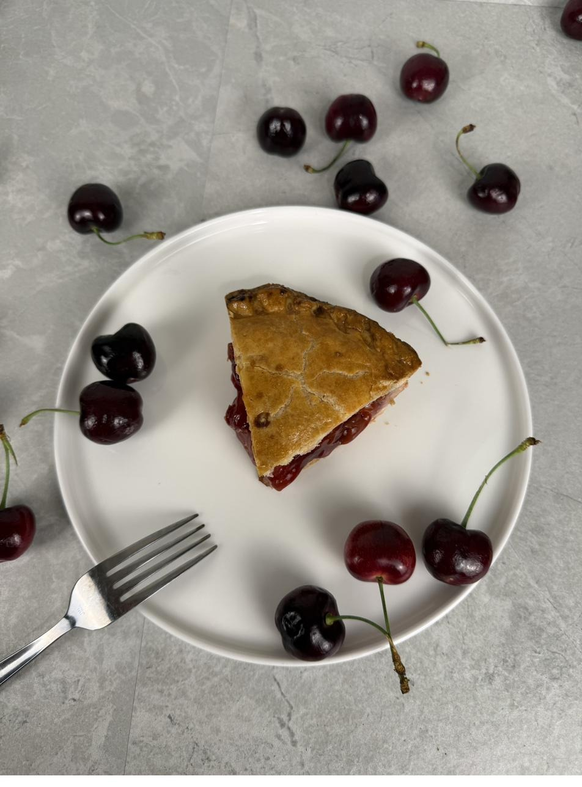

Pies and slow baking — the recipes for unhurried afternoons, kept season to season.

Honeycrisp for sweetness, Granny Smith for backbone, and a long slow bake until the kitchen smells like the season has arrived.
Read the RecipeTart cherries, a whisper of almond, an afternoon with nowhere else to be. The first pie I photographed for the Ledger.
Read the RecipePears turned in dark caramel, capped with puff pastry, then flipped to reveal what the heat has been doing all along. The quiet showpiece.
Read the Recipe"Baking is the slowest cooking there is. It asks for an afternoon, and gives back something worth waiting for."